目标检测论文解读
大白老师课程笔记:很详尽](https://www.yuque.com/darrenzhang/cv)
luoqiuluoqiu/note: 日常收集的资料和代码 - GitHub
FPN的演变¶
FPN的常见作用
FPN的常见类型
-
无融合:这个最具有代表性的就是
SSD，直接出来多个不同尺寸的特征图负责不同scale的大小物体检测 -
自上而下融合：常见的有
Faster/Mask RCNN、YOLOV3、RetinaNet、Cascade RCNN等 -
Faster(带FPN版本)/Mask RCNN，P2->P6，而作为后续特征图输入的只有p2->p5，因为作者只是用P6在RPN中获取更大尺寸的anchor的，而且C6是直接通过C5进行maxpool产生的。 -
RetinaNet -
YOLOV3 -
简单双向融合：
PANet，增加了增了从下而上的融合路径。
-
复杂的双向融合：
ASFF、NAS-FPN、Bi-FPN -
ASFF -
NAS-FPN、Bi-FPN都是在FPN中寻找一个有效的block，然后重复叠加，这样就可以弹性的控制FPN的大小。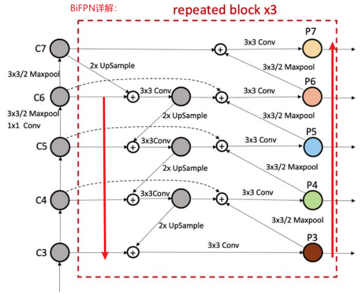
新出的FPN的改进
- 递归FPN:
DetectoRS，效果出奇的好COCO mAP 54.7
- MLFPN:
M2det
- CE-FPN：
CE-FPN

跨尺度融合的特征一般存在语义差异，综合的特征可能会产生混叠效应，混淆定位和识别。在FPN中，每一个合并的特征映射都要进行3×3的卷积，生成最终的特征金字塔。本文的**SSF+SCE融合**会使得混叠效应更严重，所以作者受CBAM启发提出**通道注意引导模块(CAG)，它可以引导金字塔的各个层次来缓解混叠效应。**CAG只通过集成映射I提取Channel权值，然后将Channel权值乘以每个输出特征。
YOLOV1¶
- 将**输入图像**分成
SxS个方格(对应到特征图上就是一个点)，每个方格单元会产生两个边界框，如果一个物体的中心点落在了某个方格区域内，则该方格就负责检测该物体(将该方格的两个框与真实物体框进行匹配，loU更大的框负责回归该真实物体框)
- 每个单元格输出通道数是
30,包含20个类别(两框共用一个类别预测:一方格多类也只预测一类)+2个框的输出，每个边界框计算一个框置信度C(两部分:是否有物体[0/1]*边框准确度)和边界框4个值(中心点坐标:x,y+宽高:w,h→边界框宽度w和高度h用图像宽度和高度归一化。×和y是相应单元格的偏移量。因此x, y, w, h都在0和1之间。)
- YOLOv1在每一个区域内预测两个边框，这样整个图上—共预测
7×7×2=98个框，这些边框大小与位置各不相同，基本可以覆盖整个图上可能出现的物体。由于两框共用一个类别预测，共计7x7=49个类别，如果一方格中有多类也只能预测一个类别。
网络结构

置信度得分
训练
-
正样本:当—个真实物体的中心点落在了某个区域内时，该区域就负责检测该物体。具体做法是将与该真实物体有最大loU的边框设为正样本，这个区域的类别真值为该真实物体的类别，该边框的置信度真值为1。
-
负样本:除了上述被赋予正样本的边框，其余边框都为负样本。负样本没有类别损失与边框位置损失,只有置信度损失，其真值为0。
-
YOLO使用预测值和GT之间的误差平方的求和(MSE)来计算损失。损失函数包括:
-
localization loss->定位损失(预测边界框与GT之间的误差) -
confidence loss->置信度损失（框的目标性, objectness of thebox)- 大多数框不包含任何目标。这导致样本类别不平衡问题，即训练模型时更频繁地检测到背景而不是检测目标。为了解决这个问题，将这个损失用因子入noobj(默认值:0.5)降低。
-
classification loss->分类损失
YOLOV2¶
YOLO v2:使用一系列的方法对YOLOv1进行了改进，在保持原有速度的同时提升准确。 Better
-
使用批归一化(
Batch Normalization)提高准确度。 -
高分辨率分类器(
High-resolution classifier)：YoLOv2以224 × 224图片开始用于分类器训练，但是然后使用10个epoch再次用448 x 448图片重新调整分类器。让网络可以调整滤波器来适应高分辨率(因为resize到224容易丢失小目标信息)，这使得检测器训练更容易。使用高分辨率的分类网络提升了将近4%的mAP。 -
用锚定框的卷积(
Convolutional with Anchor Boxes)：yolov1使用1470x1-->reshape-->7x7x30，这样丢失较多的空间信息导致定为不准;yolov2移除了全连接层，采用卷积来生成anchor框，保留了空间信息。小技巧:输入分辨率改为416x416，这样后面产生的卷积特征图宽高都为奇数，就可以使用一个中心点来预测目标框(偶数的话需要使用4个方格来预测，增加计算量)
-
维度聚类(
Dimension Clusters)：K-means聚类，距离度量使用1-IOU而不是欧式距离(欧式距离大框比小框产生更多误差，IOU与框的大小无关，yolov2k=5) -
直接位置预测(
Direct Location Prediction)。预测边界框中心点相对于对应cell左上角位置的相对偏移值。预测公式如下:


- 更精细的特征(
Fine-Grained Features):reog层
- 多尺度训练(
Multi-Scale Training)，因为是全卷积网络，不局限于输入大小:具体来说是在训练过程中每间隔一定的迭代次数之后改变模型的输入图片大小，yolov2是下采样32倍，输入图片一般选择一系列32倍数的值:{320,352,...,608}，特征图对应{10x10,11x11,...,19x19}。
正负样本和损失函数
-
正负样本
-
正样本:首先计算目标中心点落在哪个
grid上，然后计算这个grid的k个先验框（anchor）和目标真实位置的IOU值（直接计算，不考虑二者的中心位置），取IOU值大于阈值的作为正样本。loss计算box loss(包括中心点+宽高)+confidence loss+ 类别loss。 - 负样本：计算各个先验框和所有的目标
ground truth之间的IOU，如果某先验框和图像中所有物体最大的IOU都小于阈值（一般0.5），那么就认为该先验框不含目标，记作负样本，其置信度应当为0loss只计算confidence loss。 -
忽略样本：和
gt box的iou大于一定阈值，但又不负责该gt box的anchor，一般指中心点grid cell附近的其他grid cell里的anchor。不计算任何loss。 -
损失函数
Faster
- Darknet-19网络模型
- 使用连续的
3x3卷积代替7x7卷积，减少计算量； - 去掉全连接层和DropOut层，采用全卷积，最后用
global avg pooling+Softmax做预测，并使用1x1卷积来压缩
YOLOV3¶
类别预测
- 一张图即是
person类又是woman类，softmax输出多个类别预测会相互抑制(只能预测一个类别)，YOLOv3用多个独立的逻辑分类器（Logistic:二元交叉嫡损失）替换softmax函数，因为logistic分类器相互独立，可以实现多类别的预测。这个loss可以实现类别间的解耦，可以实现物体的多标签分类。
训练样本选取
-
正样本:首先计算目标中心点落在哪个
grid上，然后计算这个grid的k个先验框（anchor）和目标真实位置的IOU值（直接计算，不考虑二者的中心位置），取IOU值最大的先验框和目标匹配。于是，找到的 该grid中的 该anchor 负责预测这个目标，其余的网格、anchor都不负责。loss计算box loss(包括中心点+宽高)+confidence loss+ 类别loss。 -
负样本：计算各个先验框和所有的目标
ground truth之间的IOU，如果某先验框和图像中所有物体最大的IOU都小于阈值（一般0.5），那么就认为该先验框不含目标，记作负样本，其置信度应当为0loss只计算confidence loss。 - 忽略样本：和
gt box的iou大于一定阈值，但又不负责该gt box的anchor，一般指中心点grid cell附近的其他grid cell里的anchor。不计算任何loss。
yolov3网络结构(Darknet-53):残差(缓解梯度消失)+FPN+多层特征融合(有利于小物体检测)
- 无池化层:之前的
YOLO网络有5个最大池化层，用来缩小特征图的尺寸，下采样率为32，而DarkNet-53并没有采用池化的做法，而是通过步长为2的卷积核来达到缩小尺寸的效果，下采样次数同样是5次，总体下采样率为32。 - 输入
416x416→输出三个特征图size：13x13x255，26x26x255，52x52x255 - 输入
608x608→输出三个特征图size：19x19x255，38x38x255，76x76x255 255=3*(5+80)=每个单元格3个box*([x, y, w, h, confidence],80类)concat操作是上面特征图和本分支特征图通道结合后输出，不像ssd直接拿来用，特征图融合，效果更好- 多尺度特征融合+FPN
- 多尺度特征进行对象检测（假设输入
416*416）- 下采样
32倍,13*13的特征图:由于下采样倍数高，这里特征图的感受野比较大，因此**适合检测图像中尺寸比较大的对象**。 - 下采样
16倍,26*26的特征图:它具有中等尺度的感受野，适合检测中等尺度的对象。 - 下采样
8倍,52*52的特征图:它的感受野最小，适合检测小尺寸的对象。
- 下采样
- 锚点聚类成了
9类，这样就有9种尺度的anchor box- 因为有3个特征图，为每个特征图设置3种anchor box,这样聚类的时候聚类成九类就可以了。
- 在最小的
13*13特征图上（有最大的感受野）应用**较大的先验框**(116x90)，(156x198)，(373x326)，适合检测较大的对象。 - 中等的
26*26特征图上（中等感受野）应用**中等的先验框**(30x61)，(62x45)，(59x119)，适合检测中等大小的对象。 - 较大的
52*52特征图上（较小的感受野）应用**较小的先验框**(10x13)，(16x30)，(33x23)，适合检测较小的对象。
YOLO v3使用的方法有别于SSD，虽然都利用了多个特征图的信息，但SSD的特征是从浅到深地**分别**预测，没有深浅的融合，而YOLO v3的基础网络更像是SSD与FPN的结合。
yolov3结构解析
Neck部分立体化:FPN结构
损失函数
YOLO每个网格单元预测多个边界框。为了计算true positive的损失，只希望其中—个框负责该目标。为此，选择与GT具有最高loU的那个框。YOLO使用预测值和GT之间的误差平方的求和来计算损失。损失函数包括:
localization loss:定位损失(预测边界框与GT之间的误差)
confidence loss:置信度损失(框的目标性; objectness of the box)
classification loss:分类损失
Poly-YoLo¶
YoLoV3的两个缺点
- 大量标签重写:yolo系列是把图片切成
cell网格，每个物体的中心点落到该网格上，该网格就负责检测该物体。416x416-->13x13特征图一个点的相对于原图的感受野就是32,对于稠密物体，同一个ceil网格预测多个物体概率很大，但是yolov3产生anchor的方式，每个特征图的方格产生3个先验框，这样的话**相同的两个目标中心位于同一个cell,并且分给同一个anchor这样的话前一个目标会被后面的目标重写**(很常见，因为大多数检测的物体size都处于相同尺寸:小汽车、猪只)，这样网络训练会忽略一些目标，导致正样本数量非常少，尤其是在小特征图中更常见（结果:漏检率增高）
- 无效的anchor分配：yolov3中是使用3个特征图来分别产生anchor框预测的，分配原则是**小分辨率特征图分配较大先验框检测大物体，大分辨率特征图分配小先验框检测小物体，anchor通过kmeans聚类产生**，对于目标物体中有大中小物体，这样分配没有问题，很合理，但在通常的训练中物体一般处于同一个size，比如检测大物体，那么大中两个特征图的anchor利用率就极低了。
改进
- 标签重写问题
- 增大输出特征图大小(作者思路)
- 增大图像分辨率(速度会很慢，抛弃)
- 无效的anchor分配问题
- kmeans聚类的改进，检测单类(猪只类)，使用kmeans聚类成9类，那么即使猪只类尺寸统一也会被强制分成9类，被规划到那3个特征图上去预测(不合理)。改进:先根据特征图的感受野定出三个大概的尺度范围，设置两个阈值，然后根据阈值对
bbox进行单独三次聚类而不是作用于整个数据集。比如说猪只这个大物体被分配到同一个特征图中，其他两个特征图不是被浪费了嘛。 -
上面的方法会造成资源的浪费，考虑多尺度特征图是否有必要，是否能用分辨率高的单尺度来代替多尺度(FaceBoxes精简版就是这样做的，他们在最后特征图上每个方格产生了23个先验框)。特征图大了标签重写概率也会降低。
-
网络改写，多尺度特征融合可以加强特征的提取能力。
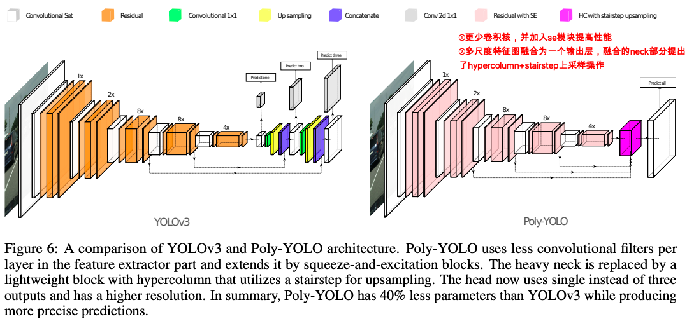
- 融合方式解析
YOLOV4(20/04)¶

输入端
Mosaic(马赛克)数据增强:解决coco数据集中小目标占比41.4%大且不均匀问题
- 大大丰富数据集，特别是随机缩放增加了很多小目标，让网络的鲁棒性更好。
BackBone创新
CSPDarknet53借鉴了CSPNet的经验，其中包含了5个CSP模块CSPNet(19/11)该网络可以增强CNN学习能力(速度快，内存成本低)。CSPNet将底层的特征映射分为两部分，一部分经过密集块和过渡层，另一部分与传输的特征映射结合到下一阶段。

- Mish激活函数

- Dropblock

Dropblock缓解过拟合的一种正则化方式，卷积层对随机丢弃不敏感(因为随机丢弃后，卷积层仍然可以从相邻的激活单元学习到**相同的信息**)- 借鉴
cutout数据增强(将输入图像部分置零:擦除),在训练中按照一定比例Dropblock每个特征图，比例不固定，开始是很小比例，随着训练过程**线性增加**这个比例。
Neck创新
在目标检测领域，为了更好的提取融合特征，通常在**Backbone**和**输出层**，会插入一些层，这个部分称为Neck。相当于目标检测网络的颈部，也是非常关键的。
- SPP模块

- 采用**SPP模块**的方式，比单纯的使用**k*k最大池化**的方式，更有效的增加主干特征的接收范围，显著的分离了最重要的上下文特征。
-
Yolov4的作者在使用**608*608**大小的图像进行测试时发现，在COCO目标检测任务中，以0.5%的额外计算代价将AP50增加了2.7%，因此Yolov4中也采用了**SPP模块**。
-
FPN+PAN结构

- Yolov4在FPN层的后面还添加了一个**自底向上的特征金字塔。FPN层自顶向下传达**强语义特征，而特征金字塔则自底向上传达**强定位特征**
- 原本的PANet网络的**PAN结构**中，两个特征图结合是采用**shortcut(add-维度不变)**操作，而Yolov4中则采用**concat（route:通道拼接）**操作，特征图融合后的尺寸发生了变化。
Prediction创新:(CIou_loss+DIou_nms)
- CIou_loss
- **IOU_Loss：**主要考虑检测框和目标框重叠面积。
- **GIOU_Loss：**在IOU的基础上，解决边界框不重合时的问题。
- **DIOU_Loss：**在IOU和GIOU的基础上，考虑边界框中心点距离的信息。
-
**CIOU_Loss：**在DIOU的基础上，考虑边界框宽高比的尺度信息。
-
DIOU_nms：效果优于传统
NMS，为什么不用CIOU_nms? ciou是在Diou的基础上添加了影响因子，包含GT，预测的时候没有GT信息，不用考虑影响因子，所以直接用DIOU_nms即可
YOLOV5¶
输入端
- Mosaic数据增强
- 自适应锚点框计算:将锚点框计算嵌入训练程序，每次训练可以自适应的计算不同训练集中的最佳锚点框(可关闭)
- 推理时自适应图片缩放:不同长宽比的图片resize到相同尺寸会有畸变，若填充黑边后resize虽然无畸变但长宽
2:1的填充黑边过多，存在信息冗余，影响推理速度；改进:长边求缩放系数，短边等比例缩放，pad_width=(缩放长边-缩放短边)%32 / 2，短边补pad_width即可(yolov5不是补黑边,而是灰色114,114,114，其实结果都一样)；32：Yolov5的网络经过5次下采样，而2的5次方，等于**32**。所以至少要去掉32的倍数，再进行取余。
Backbone创新
-
Yolov4中只有主干网络使用了CSP结构，yolov5主干和neck都用了CSP结构
-
Focus结构
Neck创新
-
FPN+PAN结构
-
Yolov4的Neck结构中，采用的都是普通的卷积操作。而Yolov5的Neck结构中，采用借鉴CSPnet设计的CSP2结构，加强网络特征融合的能力。
Predict
yolov4->CIOU_loss vs yolov5->GIOU_lossyolov4->GIOU_nms vs yolov5->加权的nms
总结:yolov5四个网络yolov5s/yolov5m/yolov5l/yolov5x网络结构都相似，只不过通过不同的depth_multiple/width_umltiple来控制网络的深度和宽度。
YOLOF(21/03)¶
作者认为FPN的作用有以下两个，探索FPN的这两个作用的实际贡献程度
- 一是多尺度特征融合，提高了特征的丰富程度；
- 二是使用分治法，将目标检测任务按照目标尺寸不同，分成若干个检测子任务(浅层特征分布小尺度
anchor检测小目标，深层特征分配大anchor检测大目标)。
以Retinanet的FPN做实验结果如下
- 多输入和单输入对结果相差不大，但是多输出和单输出对结果影响巨大，也就是说
FPN的实际贡献度大部分在分治法这边。分析原因是：多尺度输出可以获得更大丰富的感受野。
a->d，如果p5的输出获得的感受野和a等同的话，计算量是不是会大大降低？
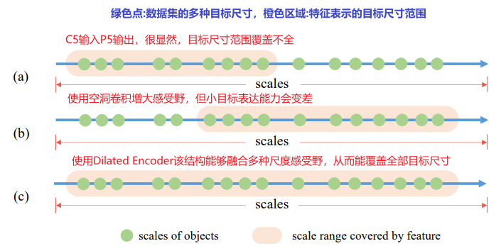
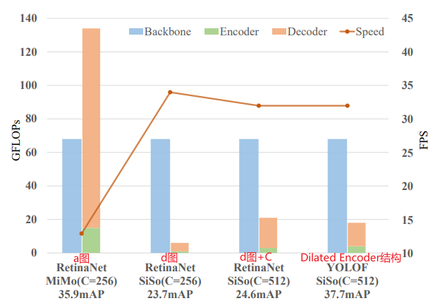
使用Dilated Encoder代替FPN效果很棒
问题:引入positive anchor不均衡问题
retinaNet某个anchor和gt框的最大iou>0.5即为positive anchor,称为Max-IoU Matching，其他检测器也常用(因为，多尺度特征可以产生很多positive anchor)，但Dilated Encoder结构只有一个输出特征，如果使用该方法，positive anchor会很少(100k-->5k)，而且，ground truth尺寸大的目标产生的positive anchor要多于ground truth尺寸小的目标产生的positive anchor，这种现象会导致网络在训练时更关注大尺寸的目标，忽略小尺寸目标。解决:Uniform Matching
- 对于每个目标，都将和该目标
ground truth最近的k个anchor作为该目标的positive anchor，从而保证每个目标都有相同数量的positive anchor，保证网络训练时能兼顾尺寸大小不同的目标。在实际应用中，为了避免一些极端情况，忽略Uniform Matching方法中产生的与ground truth的IoU大于0.7的negative anchor和与ground truth的IoU小于0.15的positive anchor。
网络结构
PPYOLO(20/07)¶
全称:PaddlePaddle-YOLO|论文地址|code
基于yolov3的目标检测器，尝试结合各种不增加模型参数的技巧，确保现有速度的情况下尽可能提高精度。经验+实验技巧文：无创新点，探索的是技巧如何结合效果更优
网络结构:backbone:resnet50-vd-dcn,detectionNeck:FPN,detectionHead:yolv3
- 紫色三角表示使用了
DropBlock,所以仅仅在FPN上使用了，在backbone上使用性能会下降； - 黄色钻石表示
CoordConv(坐标卷积) - 红色五角星表示
SPP结构
技巧的运用结合：最终PP-YOLO在COCO test-dev 2017上的性能表现：45.2% mAP，72.9 FPS！
# 数据增强
# 1. 应用从Beta(a=1.5,b=1.5)分布中采样的权重MixUp
# 2. RandomColorDistortion, RandomExpand,RandCrop和RandomFlip以0.5的概率依次应用。
# 3. 将RGB通道分别减去0.485、0.456、0.406、0.229、0.224、0.225进行归一化处理。
# 4. 最后，输入大小从[320,352,384,416,448,480,512,544,576,608]均匀抽取。
ResNet50-vd:resnet50的d版改进;Deformable Conv:可变形卷积；

LB:Larger Batch Size(64->192);指数移动平均EMA;DropBlock:feature map drop:作者仅仅用于FPN上，因为作者用到backbone上导致性能下降；
-
IOU Loss:作者发现各种IOU Loss的改善是相似的,所以选择最基础的IOU Loss，且并没有直接用该Iou loss替换smooth L1 Loss，而是添加了一个分支去计算。 -
Iou Aware:yolov3中detection_score=class_score*objectness[0,1]，然而这并没有考虑定位的精度。为了解决这个问题增加了Iou预测分支来衡量定位的准确性。在训练期间，采用IoU aware loss来训练IoU预测分支。 在推理过程中:detection_score=iou_aware_loss*class_score*objectness[0,1]，这与定位精度更加相关。 然后将最终的检测置信度用作后续NMS的输入，虽然加入了一个单独的分支但是参数只增加了一点点。 -
Grid Sensitive:网格敏感性。
-
Matrix NMS:矩阵NMS是由Soft-NMS推动的，它会削弱其他检测得分，因为它们的重叠部分呈单调递减函数；速度优于传统NMS -
CoordConv(坐标卷积):其工作原理是通过使用额外的坐标通道来使卷积访问其自身的输入坐标来增加特征之间的依赖性。因为其向卷积层添加两个输入通道，添加一些参数和FLOP，为了尽可能减少效率损失，我们不更改主干中的卷积层，而仅用CoordConv替换了FPN中的1x1卷积层和检测头中的第一个卷积层。 -
Better Pretrain Model:在ImageNet上使用具有较高分类精度的预训练模型可能会导致更好的检测性能
PPYOLOV2(21/04)¶
改进v1(fpn)的NECK:创建新neck，目的是用于构建所有尺度的高级语义特征map，因为在不同尺度下检测任务是目标检测的一个基本挑战；如下图，路径是自底向上。
结果提升如下图
改进Iou Aware:计算采用了soft weight format，这与最初的意图不一致。因此改进为应用soft label format
t为anchor与ground-truth-bounding box之间的IoUp为IoU aware branch的原始输出，σ为sigmoid激活函数。- 注意，只计算正样本的
IoU aware loss。通过替换损失函数IoU aware branch比以前更好。
Larger Input Size：输入大小均匀地从[320,352,384,416,448,480，512、544、576、608、640、672、704、736、768]获取，更大尺寸预示着更多内存，需要减少batch size
mish激活:mish在yolov4/yolov5上被证明是有效的，作者为了backbone使用预训练参数，没有在backbone上使用mish，而是在neck上用了mish激活
其他详见论文，下面这些不确定是否work
Cosine Learning Rate DecayBackbone Parameter FreezingSiLU Activation Function
FasterRcnn(15/06)¶
主要思想
-
输入任意大小PxQ的图像，首先缩放至固定大小MxN(
800*600)，送入卷积网络产生一张特征图，这张特征图有两个作用，一是经过RPN网络生成较为精准的建议框，二是和这些建议框结合依次送入到RoiPooling中，得到一系类建议特征图，再送入全连接层进行后续的softmax交叉熵分类和smooth l1边框回归（分类概率和边框回归联合训练），得到精准的边框和物体类别。 -
网络细节：在整个Conv layers中，conv和relu层不改变输入输出大小，只有pooling层使输出长宽都变为输入的½。
anchor
9种尺寸=3个面积(128,256,512)*3种尺寸(1:1,1:2,2:1)，这9个Anchors大小宽高不同，对应到原图基本可以覆盖所有可能出现的物体
- **对于一幅
W*H的feature map,对应W*H*k(9)个**锚点(Anchor)，就VGG16而言，到特征图那一步下采样了16倍，共有anchor:
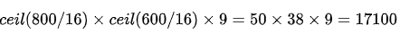
256-d是ZF网络的，使用VGG16网络的话是512-d，也就是说该特征图输出维度是512。
RPN
- 特征图之后又做了
3x3的卷积，不改变通道数，其目的是让每个点又融合了周围3x3的空间信息。 - 然后该特征图又经过了两个
1x1卷积，修改通道分别为2k+4k，其实就是对每个锚点框进行2分类(softmax交叉熵：是否是物体,注意不能得到具体类别)和4个偏移量(smooth l1 loss:x,y,w,h) - 如何获取合适的anchor？
- 按照输入的foreground softmax scores由大到小排序anchors，提取前pre_nms_topN(e.g. 6000)个anchors
- 设置合适阈值，剔除非常小（width<threshold or height<threshold）的foreground anchors
- 再次按照nms后的foreground softmax scores由大到小排序fg anchors，提取前post_nms_topN(e.g. 300)结果作为proposal输出
w*h*k*2+w*h*k*4如何混合？建议网络层(proposal layer)。三个输入(2+im_info:保存了此次缩放的所有信息)
RoiPooling
固定长度的输出，为了方便向后面的全连接层输出。
- 最后，将得到的特征拼接起来，得到的特征是
16c+4c+c= 21c维的特征。很显然，这个输出特征的长度与w、h两个值是无关的，因此**SPP池化层可以把任意宽度、高度的卷积特征转换为固定长度的向量**。
SSD(16/11)¶
简单思想:使用一种全卷积网络(魔改了vgg16)，然后使用多尺度特征图做检测，并且使用了不同长宽的先验框
简单步骤
- 魔改vgg16
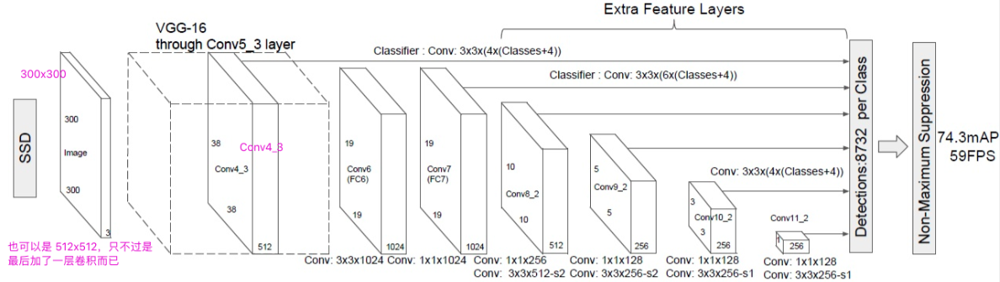
-
将VGG16的FC6和FC7层转化为卷积层，后面加了四层卷积，conv4,7,8,9,10,11,共6个特征图。每个特征图的每一个点构造4/6(
4,6,6,6,4,4)个不同尺度大小的BB，然后分别进行检测和分类，将不同feature map获得的BB结合起来(映射到原图像)，经过NMS方法来抑制掉一部分重叠或者不正确的BB，生成最终的BB集合（即检测结果） -
先验框生成：
Prior box
-
针对
feature map中的每个点作为一个cell，通过等比放缩的方法来找到原图像中对应的位置，然后将cell作为一个中心点，提取出不同尺度的bounding box候选区域，这些候选区域叫做Prior box。针对每一个Prior Box和真值GT比较会得到label。对于cell会对应到不同的Prior Box，分别当前Prior Box预测类别概率和坐标(x,y,w,h).如果预测类别共有C类，最终一个Prior Box的输出为C+4维度，所以m*n的特征图，每个cell有K个Prior box，输出的特征图维度是:(C+4)*k*m*n -
先验框生成规则：每一个
cell生成固定的scale和aspect ratio(纵横比)的box，由图可知，SSD最后生成了8732个先验框。
-
训练
-
正负样本确定:难例挖掘 每一个
feature mapcell不是k个default box都取prior box与GT box做匹配，IOU>阈值(0.5)为正样本，通过难例挖掘，使得正负样本比为1:3 -
分类和回归(每一个特征图都要进行
Detector&classifier) -
比如block7(
19x19)，默认框（def boxes）数目为6，每个默认框包含4个偏移位置和21=(20+1)个类别置信度（4+21）。因此，block7的最后输出为(19*19)*6*(4+21)。
-
推理的时候，代码中会取
top200做nms，然后根据阈值筛选即可 -
Loss：分类是
softmax，回归是Smooth L1 Loss，两个loss用参数alpha调整权重比例 -
先验框和目标类别的置信度loss+位置回归loss，其中N是match到Ground Truth的default box数量；而alpha参数用于调整confidence loss和location loss之间的比例，默认alpha=1。
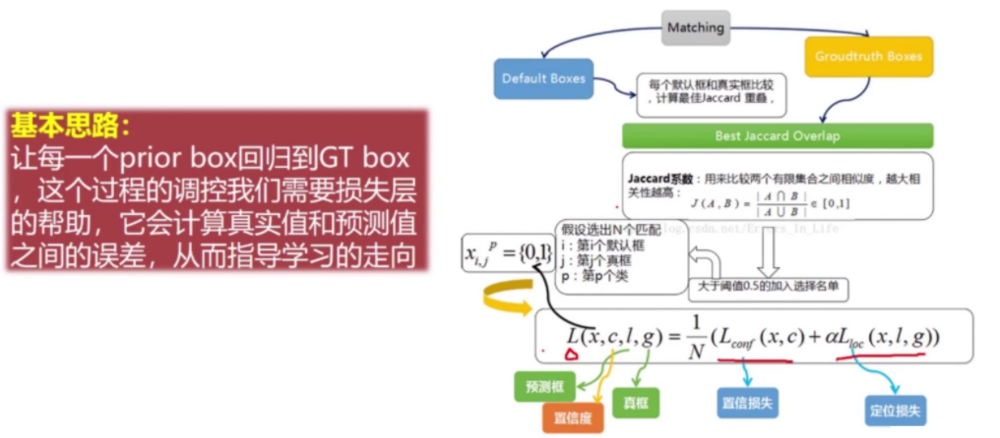
- 置信度loss
- 回归loss
-
缺点
-
在
SSD中，不同层的feature map都是独立作为分类网络的输入，因此容易出现相同物体被不同大小的框同时检测出来（不同特征图之间缺乏缺乏联系） -
SSD算法对**小目标不够鲁棒**的最主要的原因是**浅层**feature map的**表征能力不够强**
DSSD(17/01)¶
论文:ssd原作者：SSD算法对**小目标不够鲁棒**的最主要的原因是**浅层**feature map的**表征能力不够强**，这篇论文主要是在原始SSD上加入了**反卷积**用来提升表征能力。
DSOD(17/08)¶
DSOD=SSD+DenseNet：提出一种新的dense结构用于融合多尺度信息（相比原版SSD的一个改进）

FSSD(17/12)¶
FSSD=SSD+FPN
- FSSD中将**较小**的特征图上采样到统一尺寸，通过
concat进行特征连接，作为后续SSD预测模块的输入。
RSSD(17/05)¶
改善了SSD存在的两个问题
- 一方面利用**分类网络**增加不同层之间的feature map联系，减少重复框的出现；
- 另一方面增加
feature pyramid中feature map的个数，使其可以检测更多的小尺寸物体。
pooling方式生成特征金字塔
pooling是降维，从左往右concate：最左边的38*38的feature map，将其做pooling后和右边第二个的19*19的feature map做concate，这样就有两个19*19的feature map了（一个红色，一个橙色）；然后再对这两个19*19的feature map做pooling，再和左边第三个黄色的10*10的feature map做concate……
deconvolusion反卷积方式生成特征金字塔
- 反卷积是升维，从右到左，最右边的
1*1的紫色feature map往左做concate
作者认为前两种特征融合方式的缺点在于信息的传递都是单向的，这样分类网络就没法利用其它方向的信息，因此就有了both pooling and deconvolution（Rainbow concatenation）
Rainbow concatenation
- 用不同颜色的矩形框表示不同层的
feature map(组合起来像彩虹)，同时采用pooling和deconvolution进行特征融合，从左至右（pooling，concate）和从右至左（deconvolution，concate） - 在做
concate之前都会对feature map做一个normalization操作，因为不同层的feature map的scale是不同的，文中的normalization方式采用batch normalization
RFBNet(17/11)¶
主要思想:提出了RFB模块，并将它添加到SSD的顶部，构建了RFBnet，Inception思想(并联)+空洞卷积:增大感受野,总而言之:出发点是模拟人类视觉的感受野进行RFB结构的设计
RFB模块
* 参考了`Inception结构`，RFB模块引用了不同尺寸的卷积核(`1x1,3x3,5x5`)构成并联分支。
* 空洞卷积层(`3x3 rate=1`,`3x3 rate=3`,`3x3 rate=5`)
- RFB结构中最后会将不同尺寸和rate的卷积层输出进行concat，达到融合不同特征的目的。(
1x1卷积)
网络结构
- RFB模块
- RFB-s模块
-
RFB-s和RFB相比主要有两个改进
- 一方面用
3*3卷积层代替5*5卷积层 - 另一方面用
1*3和3*1卷积层代替3*3卷积层，主要目的应该是为了减少计算量，类似Inception后期版本对Inception结构的改进。
- 一方面用
-
网络结构(对ssd轻微改动)
- 主干网络上用两个RFB结构替换原来新增的两层。
- conv4_3和conv7_fc在接预测层之前分别接RFB-s和RFB结构
RefineDet(17/11:小目标)¶
保证SSD高效的前提下提升检测效果(做法:结合one stage + two stage)：SSD+RPN+FPN的思想。
- 引入two stage的object detection中的对box由粗到细的回归思想(RPN先粗粒度回归box信息+一个常规回归分支得到更准确的框信息)
- 引入类似**FPN网络的特征融合操作**，可以有效提高对**小目标的检测效果**，检测网络的框架还是**SSD**。
网络搭建
以特征提取网络为ResNet101为例
- 输入图像大小为
320*320为例，在ARM部分的4个灰色矩形块（feature map）的size分别是40*40,20*20,10*10,5*5，其中前三个是ResNet101网络本身的输出层，最后5*5输出是另外添加的一个residual block。 - 有了特征提取的主网络后，就要开始做**融合层操作**了，首先是
5*5的feature map经过一个transfer connection block得到对应大小的蓝色矩形块（P6）,对于生成P6的这条支路而言只是3个卷积层而已。接着基于10*10的灰色矩形块（feature map）经过transfer connection block得到对应大小的蓝色矩形块（P5），此处的transfer connection block相比P6增加了**反卷积支路**，反卷积支路的输入来自于生成P6的中间层输出。P4和P3的生成与P5同理。
网络结构思想
上面这个网络类似两阶段:一个子模块做RPN的事，另一个子模块做SSD的事。
-
ARM部分扮演了RPN网络的角色:去除一些负样本(因为负样本数量>正样本数量)，得到了较为精细的boxes。并且ARM部分输入利用了多层特征，而RPN网络的输入是单层特征。基于4层特征最后得到的还是两条支路，一个bbox的坐标回归支路，另一个是bbox的二分类支路。 -
注意:IOU阈值设置为0.5会有很多背景标签(负样本)，
ARM结构虽然可以过滤掉一些负样本，但接下来还是要采用类似SSD算法中的hard negative mining来设定正负样本的比例（一般设定为1:3），当然负样本不是随机选的，而是根据box的分类loss排序来选的，按照指定比例选择loss最高的那些负样本即可。 -
TCB部分是做特征的转换操作，也就是将ARM部分的输出feature map转换成ODM部分的输入，这部分其实和FPN算法的特征融合很像，FPN也是这样的upsample后融合的思想。
-
ODM部分就是SSD了,也是融合不同层的特征，然后做多分类和回归。不同于SSD的两方面: -
输入的
anchors是ARM部分得到的精准anchors(类似RPN网络输出的proposal) -
另一方面和FPN算法类似(多尺度融合)，对SSD做了改进。
-
在SSD中浅层的feature map是直接拿来用的（并没有和高层的feature map融合），也就是对bbox的预测是在每一层上进行的，预测得到结果后再将各层结果整合在一起。
-
而这里的浅层feature map（size较大的蓝色矩形块）融合了高层feature map的信息，然后预测bbox是基于每层feature map（每个蓝色矩形块）进行，最后将各层结果再整合到一起。
- 这是非常重要的区别：这样做的好处就是对小目标物体的检测效果更好，这在FPN和RON等算法中已经证明过了。
-
损失函数
- ARM部分包含binary classification损失Lb和回归损失Lr
- ODM部分包含multi-class classification损失Lm和回归损失Lr。
SegNet(15/11)¶
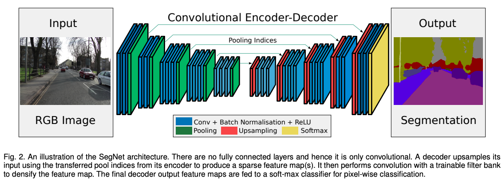
- 使用
VGG16网络，去掉全连接层，搭建对称模型。2016年，Segnet研究组在原有网络框架基础加入了跳跃连接，算是有了进一步发展。 Segnet语义分割网络的关键在于下采样和上采样。在上采样(反卷积)的过程中，使用下采样时记录的Max Value像素位置指标，这样做的好处是防止边缘信息的丢失(ENet中也使用了)。
ENet(16/06)¶
实时语义分割:要想在移动终端或者嵌入式系统上应用，小巧高速是很重要的。ENet在追求高效率的同时兼顾了精度
- 初始化层:压缩输入图片的分辨率，减少计算量。因为直接使用原始分辨率代价较高，而且视觉信息存在大量冗余，需要对输入做一个预处理，先用一层网络讲这些信息浓缩，当然**这一步的特征图个数(通道个数)不用太多，16与32效果几乎相同。**
-
下采样(边缘信息丢失问题):单独存储边缘信息,然后上采样恢复时使用之前保存的边缘信息(SegNet方案)
-
不同于普通的编解码结构(结构上完全对等)，作者的编码器规模大一些，**因为要**用来提取信息；**但是**解码器本质上只是对编码器结果的细节精调，**因此**规模可以减小，这样也缩小了网络体积，加速了运算。
- 经过作者的测试,在ENet中使用ReLU非线性激活函数反而降低了ENet的精度(原因:作者推论网络本身较浅)，所以使用了
PReLu精度反而较高。 - 对称卷积(低阶近似)：考虑到卷积层权重其实有相当大的冗余，可以用
nx1和1xn的两个卷积层级联（对称卷积）来替代一个nxn的卷积层来缩小计算量。具体地，用n=5的对称卷积的计算量近似于一个3x3的普通卷积，但是由于引入了非线性，这样的操作还能够增加函数的多样性 - 空洞卷积：空洞卷积可以减小计算量、增大感受野。为了使空洞卷积发挥最大的作用，ENet中穿插地使用了普通卷积、对称卷积和空洞卷积。
FPN(16/12)¶
FPN主要解决的是物体检测中的多尺度问题，通过简单的网络连接改变，在基本不增加原有模型计算量情况下，大幅度提升了小物体检测的性能。
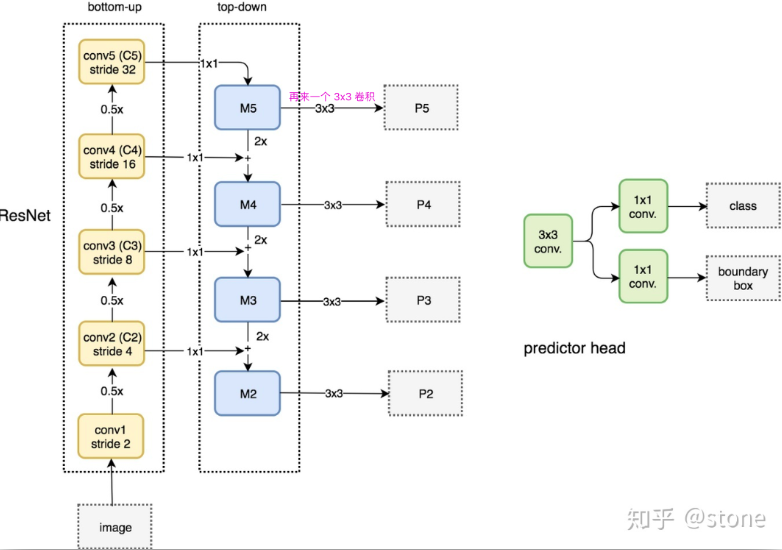
- 这里的上采样直接使用的是**最近邻上采样(直接对临近元素进行复制)**，而不是使用线性插值或反卷积操作，一方面简单，另外一方面可以减少训练参数。
- 进行
1 * 1的卷积，以调整通道数和上采样的结果相同。 - 相加:是指特征图的长宽相同，通道数固定为
256，逐元素相加。 - 相加之后，对相加的结果进行
3*3的卷积，以消除上采样的混淆现象（aliasing effect）
MaskRCNN(17/03)¶
MaskRCNN是在FasterRCNN的基础上改进的，主干网络换成了ResNet-FPN,增加了RoiAlign,FCN预测mask分支
ResNet-FPN
- 实际上，上图少绘制了一个分支：M5经过步长为
2的max pooling下采样得到P6，作者指出使用P6是想得到更大的anchor尺度512×512。但P6是只用在 RPN中用来得到region proposal的，并不会作为后续Fast RCNN的输入 - ResNet-FPN作为RPN输入的feature map是[P 2, P 3, P 4, P 5, P 6]，而作为后续
Fast RCNN的输入则是[P 2, P 3, P 4, P 5]
-
Resnet-FPN产生了大小不同的五个特征图[P 2, P 3, P 4, P 5, P 6]，这些特征图各自经过RPN层产生很多先验框，但是用于映射到特征图的只有[P 2, P 3, P 4, P 5]没有 P6 ，也就是说要在[P 2, P 3, P 4, P 5]中根据
region proposal切出ROI进行后续的分类和回归预测。 -
我们要选择哪个feature map来切出这些ROI区域才算最合适的feature map呢？
- 大尺度的ROI要从低分辨率的feature map上切，有利于检测大目标，小尺度的ROI要从高分辨率的feature map上切，有利于检测小目标
RoiAlign(roi特征图输送到roipooling)
Faster Rcnn的两次整数化
region proposal的(x,y,w,h)通常是**小数**，但是为了方便操作会把它整数化。- 将整数化后的边界区域平均分割成
k x k个单元，对每一个单元的边界进行整数化。
ROI Align方法取消整数化操作，保留了小数，使用双线性插值的方法获得坐标为浮点数的像素点上的图像数值
损失函数
- 假设一共有
K个类别，则mask分割分支的输出维度是K * m * m，对于m*m中的每个点，都会输出K个二值Mask（每个类别使用sigmoid输出）。 - 需要注意的是，计算loss的时候，并不是每个类别的sigmoid输出都计算二值交叉熵损失，而是该像素属于哪个类，哪个类的sigmoid输出才要计算损失(如图红色方形所示)。并且在测试的时候，我们是通过分类分支预测的类别来选择相应的mask预测。这样，mask预测和分类预测就彻底解耦了。
- 这与FCN方法是不同，FCN是对每个像素进行多类别softmax分类，然后计算交叉熵损失，很明显，这种做法是会造成类间竞争的，而每个类别使用sigmoid输出并计算二值损失，可以避免类间竞争。实验表明，通过这种方法，可以较好地提升性能。
OHEM(16/04)¶
OHEM(FastRCNN作为基础检测算法)，用来解决目标不均衡问题
- 对RoI的损失进行排序，进行一步NMS操作，以去除掉重叠严重的RoI，并在筛选后的RoI中选择出固定数量损失较大的部分，作为难样本。
- 将筛选出的难样本输入到可读写的b网络中，进行前向计算，得到损失。
- 利用b网络得到的反向传播更新网络，并将更新后的参数与上半部的a网络同步，完成一次迭代。
- OHEM是近年兴起的另一种筛选example的方法，它通过对loss排序，选出loss最大的example来进行训练，这样就能保证训练的区域都是hard example。这个方法有个缺陷，它把所有的easy example都去除掉了，造成easy positive example无法进一步提升训练的精度。
- OHEM算法虽然增加了错分类样本的权重，但是OHEM算法忽略了容易分类的样本。
RetinaNet(17/08:Focal Loss)¶
Focal Loss + OneStage = RetinaNet，目的是想提高单阶段网络精度不高的问题，主要原因是**正负类别不均衡**问题(一张图片要产生成千上万的候选框，其中只有一小部分含有object)。
-
正负类别不均衡会带来什么？
- 负样本数量太大，占总的loss的大部分，而且多是容易分类的，因此使得模型的优化方向并不是我们所希望的那样，因为分类器无脑地把所有bbox统一归类为background，accuracy也可以刷得很高。
-
ssd、yolo和faster-Rcnn的解决方案:
- 在SSD中利用Hard-Negtive-Mining的方式将正负样本的比例控制在1:3
-
YOLO通过损失函数中权重惩罚的方式增大正样本对损失函数的影响
-
Faster-RCNN在FPN阶段会根据前景分数提出最可能是前景的example，这就会滤除大量背景概率高的easy negtive样本
Focal Loss
引入了Focal Loss来解决**难易样本数量不平衡**，通过减少易分类样本的权重，使得模型在训练时更专注于难分类的样本。
损失函数详解
- 因为是二分类，所以y的值是正1或负1，p的范围为0到1。当真实label是1，也就是y=1时，假如某个样本x预测为1这个类的概率p=0.6，那么损失就是-log(0.6)，注意这个损失是大于等于0的。如果p=0.9，那么损失就是-log(0.9)，所以p=0.6的损失要大于p=0.9的损失，这很容易理解。
- at系数类似于pt，当label=1的时候，at=a；当label=-1的时候，at=1-a，a的范围也是0到1。因此可以通过设定a的值（一般而言假如1这个类的样本数比-1这个类的样本数多很多，那么a会取0到0.5来增加-1这个类的样本的权重）来控制正负样本对总的loss的共享权重。
- 虽然可以控制正负样本的权重，但是没法控制容易分类和难分类样本的权重，于是就有了focal loss

- 当一个样本被分错的时候，pt是很小的（请结合pt公式的定义，比如当y=1时，p要小于0.5才是错分类，此时pt就比较小，反之亦然），因此调制系数就趋于1，也就是说相比原来的loss是没有什么大的改变的。当pt趋于1的时候（此时分类正确而且是易分类样本），调制系数趋于0，也就是对于总的loss的贡献很小。
- 当γ=0的时候，focal loss就是传统的交叉熵损失，当γ增加的时候，调制系数也会增加。

- 这样既能调整正负样本的权重，又能控制难易分类样本的权重
- 在实验中a的选择范围也很广，一般而言当γ增加的时候，a需要减小一点（实验中γ=2，a=0.25的效果最好）
RetinaNet网络结构
效果
- (a)是在交叉熵的基础上加上参数a，a=0.5就表示传统的交叉熵，可以看出当a=0.75的时候效果最好，AP值提升了0.9。
- (b) 是对比不同的参数γ和a的实验结果，可以看出随着γ的增加，AP提升比较明显。
- (d) 通过和OHEM的对比可以看出最好的Focal Loss比最好的OHEM提高了3.2AP。这里OHEM1:3表示在通过OHEM得到的minibatch上强制positive和negative样本的比例为1:3，通过对比可以看出这种强制的操作并没有提升AP。
- (e) 加入了运算时间的对比，可以和前面的Figure2结合起来看，速度方面也有优势！注意这里RetinaNet-101-800的AP是37.8，当把训练时间扩大1.5倍同时采用scale jitter，AP可以提高到39.1，这就是全文和table2中的最高的39.1AP的由来。
-
对比forground和background样本在不同γ情况下的累积误差。
- 纵坐标是归一化后的损失
- 横坐标是总的foreground或background样本数的百分比。
-
可以看出γ的变化对正（forground）样本的累积误差的影响并不大，但是对于负（background）样本的累积误差的影响还是很大的（γ=2时，将近99%的background样本的损失都非常小）
Repulsion Loss(17/11:解决遮挡)¶
论文地址|Code|博客|博客代码|[rɪ'pʌlʃən]:斥力
本文是旷视研究院CVPR2018上的一篇工作，主要目的是为了解决行人检测的遮挡(类间或类内)问题，这里先讲解类内遮挡。
遮挡问题
- 问题一:框偏移
- 问题二:框抑制，漏检
-
**NMS**操作是为了抑制去除掉多余的框。但是在遮挡检测中，
NMS操作会带来更糟糕的检测结果，因为T的预测框P会被B的预测框给抑制，导致漏检。 -
总结:对NMS阈值很敏感：阈值太低了会带来漏检，阈值太高了会带来**假正例**（即标出错误的目标:红色偏移部分）
问题解决
- 不仅仅考虑目标框，还要考虑周围框的影响，磁铁效应:设计损失函数在要求预测框
P靠近目标框T(吸引)的同时，也要求预测框P远离其他不属于目标T的真实框(排斥)，这样就很好的降低NMS的对阈值的敏感性
-
参数解释:设
P(lP , tP , wP , hP )为候选框G(lG, tG, wG, hG)为真实框，P+为正候选框集合，正候选框的意思是，至少与其中一个真实框的IoU大于某个阈值，这里是0.5 g = {G}是真实框集合 -
L_attr:smooth L1损失，目的是使得预测框和匹配上的目标框尽可能接近。
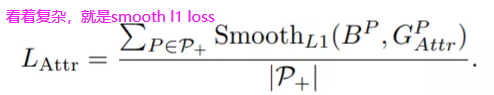
L_RepGT:目标使预测框要尽量远离和它重叠的第二大的GT(除去本身要回归目标的真实框外，与其IoU最大的真实框)
-
使用
IoG而不使用IoU的原因是，IoG的分母下，真实框大小area(G)是固定的，因此其优化目标是去减少与目标框重叠，即**area(B∩G)**。而在IoU下，回归器也许会尽可能让预测框更大（即分母）来最小化loss -
L_RepBox:使分派到不同GT的预测框之间尽量远离。
α和β用于平衡两者的权重
- 后续的NMS可以使用soft-nms、DIOU-NMS用来减少损失。
结论
- 猪只数据集合提升不大，整体仅提升了0.5个百分点；选取iou重叠(阈值0.5)占比达30%,的数据集，验证整体提升了2.1个百分点。画出结果，肉眼观察很明显漏检消失。
PANet(18/03)¶
COCO2017实例分割比赛的冠军，也是目标检测比赛的第二名。
- 可以看做是
Mask RCNN的多处改进，充分利用了特征融合，比如引入bottom-up path augmentation结构，充分利用网络浅特征进行分割 - 引入
adaptive feature pooling使得提取到的ROI特征更加丰富 - 引入
fully-connected fusion，通过融合一个前背景二分类支路的输出得到更加精确的分割结果。
-
FPN:主要是通过融合高低层特征提升目标检测的效果，尤其可以提高小尺寸目标的检测效果 -
bottom-up path augmentation:这个引入主要是考虑浅层特征信息(边缘形状等特征)对实例分割(因为是像素级的分类)非常重要。
- FPN的红色箭头，由底层传到顶层，要经过几十上百的层，浅层特征信息丢失严重
-
绿色箭头(这个结构不到10层)：浅层特征→P2→沿着
bottom-up path augmentation传递到顶层，经过的层数就不到10层，能较好地保留浅层特征信息。 -
adaptive feature pooling:主要做的还是特征融合，将单层特征(类似FasterRcnn的每个ROI层要经过一个ROIPooling一样,(FPN也是单层))换成每个ROI需要经过**多层特征**：也就是说每个ROI需要和多层特征(N2.N3.N4.N5)做ROI Align的操作，然后将得到的不同层的ROI特征融合在一起，这样每个ROI特征就融合了多层特征。
-
多层特征融合是因为论文中作者做了一个实验，详情看AI之路博客或论文。
-
fully-connected fusion:针对原有的分割支路（FCN）引入一个前背景二分类的全连接支路，通过融合这两条支路的输出得到更加精确的分割结果。
EfficientNet(19/05)¶
目前分类网络常用优化方向:加宽网络、加深网络、增加分辨率，作者认为这三种方式不应该相互独立，所以作者通过综合这些方式，大大减少了模型参数量和计算量。
作者做了一个小实验进行验证:
- 单个维度的优化:能提升模型效果，但是上限也比较明显，基本上在Acc达到80后提升就很小了。
- 3个维度共同优化:有效提升模型的效果（突破80），这就说明多维度融合是有效的。
如何找到3个维度合适的缩放系数呢？
1.建立优化公式
- N表示分类网络，X表示输入，Fi表示基础网络层，i表示stage，Li表示Fi结构在第i个stage中的重复数量。
- 公式1这样的定义方式对应的最直观例子就是ResNet系列网络，我们知道ResNet系列网络有多个stage，每个stage包含不同数量的block结构。
- 待优化的参数就是网络深度（d）、网络宽度（w）和分辨率（r）
- 在模型参数和计算量满足限制条件的情况下最大化网络的准确率
- 引入Φ参数，并将3个待优化参数都用Φ指数表示
- 同时对底做了数值限制，做限制可以减少网格搜索时的计算量，而具体的限制公式确定是为了方便计算FLOPS。
- 这里需要说明一下d、w和r参数对FLOPS计算的影响，以卷积层为例,假如d变成原来的2倍，那么FLOPS也会变成原来的2倍；假如w变成原来的2倍，那么FLOPS就变成原来的4倍，因为输入输出通道都变成原来的2倍了，所以在计算量方面相当于4倍；r和w同理。
2.通过网络结构搜索设计baseline网络
3.如何优化
- 第一步是固定
Φ=1，然后通过网格搜索找到满足公式3的最优α、β、γ，比如对于EfficientNet-B0网络而言，最佳的参数分别是α=1.2、β=1.1、γ=1.15（此时得到的也就是EfficientNet-B1） - 固定第一步求得的α、β、γ参数，然后用不同的Φ参数得到EfficientNet-B1到EfficientNet-B7网络
模型结果
EfficientDet(19/11)¶
EfficientDet是一个总称，可以分为 EfficientDet D1 ~ EfficientDet D7，速度逐渐变慢，但是精度也逐渐提高。
两点主要贡献：BiFPN和Compound Scaling
BiFPN
- **FPN**中不同的输入特征具有不同的分辨率，我们观察到它们对融合输出特征的贡献往往是不平等的。
- BiFPN**作者提出了一种简单而高效的**加权（类似与attention）**双向特征金字塔网络（**BiFPN），它引入可学习的权值来学习不同输入特征的重要性，同时反复应用自顶向下和自下而上的多尺度特征融合。
BiFPN加权策略
Wi可以是一个特征/一个通道/一个多维度的tensor，但是如果不对其限制容易导致训练不稳定。
- 所以对每一个权重用
softmax，但是计算softmax速度较慢
-
作者提出了快速的限制方法，为了保证weight大于0，weight前采用relu函数。
-
举例说明
Compound Scaling
-
Backbone network：直接使用EfficientNet-b0~b6
-
BiFPN network
- Box/class prediction network
- Input image resolution（文中说必须是2^7＝128的倍数）
HRNet(19/02)¶
HRNet打通了各个方向(分类、检测、分割、姿态估计、人脸关键点等)，主要原理:通过并行多个分辨率的分支，加上不断进行不同分支之间的信息交互(目的是补充通道数减少带来的损耗)，同时达到强语义信息和精准位置信息的目的。就检测而言，高分辨率对于位置信息十分敏感，之前的许多网络为了维持高分辨率，常常是下采样得到强语义信息后再上采样恢复高分辨率，这个过程中会损失大量的有效信息，HRNet重点在**并行**
backbone解析
FuseLayer
前向计算时用一个二重循环将构建好的二维矩阵一一解开，将对应同一个post的pre转换后进行融合相加。比如post1 = f11(pre1) + f12(pre2) + f13(pre3)
TransitionLayer
静态构建一个一维矩阵，然后将pre和post对应连接的操作一一填入这个一维矩阵中。post4比较特殊，这一部分代码和图例不太一致，图例是pre1&pre2&pre3都进行下采然后进行融合相加得到post4，而代码中post4通过pre3下采得到。
Neck设计:HRNet的backbone输出有四个分支，paper中给出了几种方式对输出分支进行操作
Cascade R-CNN(17/12)¶
通过级联几个检测网络(设置不同IOU值确定正负样本)达到不断优化预测结果的目的，主要解决了检测框不是特别准，容易出现噪声干扰的问题
思路解剖
u=0.5常用,会出现较多误检测，因为这个阈值会使得正样本中含有有较多的背景。u=0.7这样可以减少误检测了吧，但是这样会导致,正样本数量较少，过拟合风险大，检测效果就差- 作者通过实验，c中可以看出:当一个检测模型采用某个阈值（假设u=0.6）来界定正负样本时，那么当输入proposal的IOU在这个阈值（u=0.6）附近时，该检测模型比基于其他阈值训练的检测模型的效果要好。既然这样，那IOU阈值设置的越大不就越好吗？思路走不通，解答为上。
- 所以我们希望的是:同时训练多个检测模型，每个检测模型用的IOU阈值要尽可能和输入proposal的IOU接近，这样每个检测模型得到的效果都很好。这几个检测模型如何连接呢？**作者在实验中发现，**输出的IOU大于输入的IOU，如果前一个模型的输出作为后一个检测模型的输入，这样IOU阈值会一直上升。 因此采取cascade的方式能够让每一个stage的detector都专注于检测IOU在某一范围内的proposal，因为输出IOU普遍大于输入IOU，因此检测效果会越来越好。
- 这也就解释了只用固定IOU=0.5,检测效果不精准的原因:当输入proposal的IOU不在你训练检测模型时IOU值附近时，效果不会有太大提升。
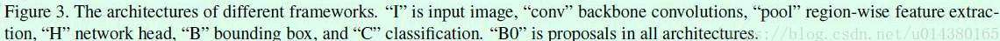
Mask Scoring R-CNN(19/03)¶
思想:本算法是在Mask R-CNN的基础上提出的，作者发现经典分割框架存在着一个缺陷:mask score=bounding box的classification confidence，然而mask score和mask quality不配准(classification confidence高可以表示检测框的置信度高（严格来讲不能表示框的定位精准），但也会存在mask分割的质量差的情况)，如何得到精准mask质量呢？
- mask quality = maskIoU(pre_mask+gt_mask) * classification score:mask score就同时表示分类置信度和分割的质量
做法:
- 在Mask R-CNN的基础上添加了一个**MaskIoU分支**用于得到pre mask和gt mask的IoU，输入由两部分组成
- 一是ROIAlign得到的RoI feature map = gt_mask
- 二是mask分支输出的mask = pre_mask
- 检测分支输出score最高的100个框，再送入mask分支，得到mask结果
- 两者concat之后经过3层卷积和2层全连接输出
MaskIoU- RoI feature map和mask结果送入MaskIoU分支得到mask iou，与box的classification score相乘就得到最后的mask score。
CornerNet(18/08)¶
通过检测目标框的左上角和右下角两个关键点得到预测框，因此CornerNet算法中没有anchor的概念，也就没有样本不均衡，也无需NMS。
CornerNet算法整体结构
-
主干网络
Hourglass,下采样因子4：512//4=128 -
后面接了两个分支(左上角点预测分支和右下角点预测分支)，每个分支模块包含一个
corner pooling层和3个输出：heatmaps、embeddings和offsets。 -
heatmaps是输出**预测角点信息**，可以用维度为C*H*W的特征图表示，其中C表示目标的类别（注意：没有背景类），这个特征图的每个通道都是一个mask，mask的每个值（预测值范围为0~1）表示该点是**角点的分数**-
p_cij表示预测的heatmaps在第c个通道（类别c）的(i,j)位置的值，y_cij表示对应位置的ground truth，N表示目标的数量。y_cij=1时候的损失函数容易理解，就是focal loss，α参数用来控制难易分类样本的损失权重；y_cij等于其他值时表示(i,j)点不是类别c的目标角点，照理说此时y_cij应该是0（大部分算法都是这样处理的），但是这里ycij不是0，而是用基于ground truth角点的高斯分布计算得到，因此距离ground truth比较近的(i,j)点的y_cij值接近1，这部分通过β参数控制权重，这是和focal loss的差别。为什么对不同的负样本点用不同权重的损失函数呢？这是因为靠近ground truth的误检角点组成的预测框仍会和ground truth有较大的重叠面积。 -
对不同负样本点的损失函数采取不同权重值的原因

-
-
embeddings用来对预测的角点做group，也就是找到属于同一个目标的左上角角点和右下角角点-
上面介绍的两个角点的预测是独立的，如何找到一个目标的两个角点就是这步完成的。基于不同角点的embedding vector之间的距离找到每个目标的一对角点，如果一个左上角角点和一个右下角角点属于同一个目标，那么二者的embedding vector之间的距离应该很小。
-
这部分的训练主要是通过两个损失函数完成
e_tk表示第k个目标的**左上角角点**的embedding vector，e_bk表示第k个目标的**右下角角点**的embedding vector，e_k表示e_tk和e_bk的均值。- 公式4用来缩小属于同一个目标（第k个目标）的两个角点的embedding vector（etk和ebk）距离。
- 公式5用来扩大不属于同一个目标的两个角点的embedding vector距离。
-
-
offsets用来**对预测框做微调**，这是因为从输入图像中的点映射到特征图时有量化误差，offsets就是用来输出这些误差信息。- 从输入图像到特征图之间会有尺寸缩小，假设缩小倍数是n，那么输入图像上的(x,y)点对应到特征图上的式子:,向下取整会带来精度丢失(类似FasterRcnn中的精度丢失:尤其影响小尺寸目标的回归)
- 公式2计算offset，然后通过公式3的smooth L1损失函数监督学习该参数，和常见的目标检测算法中的回归支路类似。
-
corner pooling- 为什么使用
corner pooling而不是使用普通池化
-
因为CornerNet是预测左上角和右下角两个角点，但是这两个角点在不同目标上没有相同规律可循，如果采用普通池化操作，那么在训练预测角点支路时会比较困难。考虑到左上角角点的右边有目标顶端的特征信息（第一张图的头顶），左上角角点的下边有目标左侧的特征信息（第一张图的手），因此如果左上角角点经过池化操作后能有这两个信息，那么就有利于该点的预测，这就有了corner pooling。
-
如何针对左上角点做
corner pooling？
-
上层有2个输入特征图，特征图的宽高分别用W和H表示，假设接下来要对图中红色点（坐标假设是(i,j)）做corner pooling，那么就计算(i,j)到(i,H)的最大值（对应Figure3上面第二个图），类似于找到Figure2中第一张图的左侧手信息；同时计算(i,j)到(W,j)的最大值（对应Figure3下面第二个图），类似于找到Figure2中第一张图的头顶信息，然后将这两个最大值相加得到(i,j)点的值（对应Figure3最后一个图的蓝色点）。右下角点的corner pooling操作类似，只不过计算最大值变成从(0,j)到(i,j)和从(i,0)到(i,j)。
-
举例解释如何对左上角做
corner pooling
-
该图一共计算了4个点的corner pooling结果。第二列的数值计算和Figure3介绍的一样，比如第一行第一个图中的0值点，计算该点的最大值时是计算该点和其右侧的值为2的点的最大值，因此得到的就是2。
-
预测模块详细结构
- 该结构包括corner pooling模块和预测输出模块两部分，corner pooling模块采用了类似residual block的形式，有一个skip connection，虚线框部分执行的就是corner pooling操作，也就是Figure6的操作，这样整个corner pooling操作就介绍完了。
- 为什么使用
-
模型测试时细节
- 在得到预测角点后，会对这些角点做NMS操作，选择前100个左上角角点和100个右下角角点。
- 计算左上角和右下角角点的embedding vector的距离时采用L1范数，距离大于0.5或者两个点来自不同类别的目标的都不能构成一对。
- 测试图像采用0值填充方式得到指定大小作为网络的输入，而不是采用resize，另外同时测试图像的水平翻转图并融合二者的结果。
- 最后通过soft-nms操作去除冗余框，只保留前100个预测框。
FCOS(19/03)¶
核心思想(不太利于小目标训练)
one-stage(与RetinaNet对比)+anchorfree(cornerNet思想)- 借鉴
FCN的逐像素目标检测思想:预测输入图像中每个点所属的目标类别和目标框 - 提出了
中心度（Center—ness）的思想
网络结构
类似FPN的网络结构(因为和RetinaNet做对比,所以网络结构类似),最后基于5个特征图做预测,预测层有三个分支,下面解释三个预测层。
- 第一个是**分类支路**:
H*W表示特征的大小,C表示类别数,该预测层的特征图位置(x,y)对应到输入图像位置换算公式如下(s表示缩放比例),方便计算特征图上每个点的分类和回归目标:
-
第三个是**回归分支**:4表示**回归相关的4个值**(
(l,t,r,b)不同于anchor的主要差别) -
4个值
(l,t,r,b)表示目标框内某个点离框的左边、上边、右边、下边的距离-
标注好的目标框(左上角+右下角+类别)表示:B_i = ({x_0}^{(i)},{y_0}^{(i)},{x_1}^{(i)},{y_1}^{(i)},{c}^{(i)})
-
确定输入图像的每个点类别标签(根据这个点是否在标记框中:在->正样本,类别=标注框类别.不在:负样本,类别=0)，回归目标就是下面这4个值(为保证都是正值,四值都需要通过exp()函数):
- FCOS的正负样本是基于每个点的，一般一张图像上目标框的面积和非目标框的面积差距不会非常大，因此基本不存在正负样本不均衡的现象(小目标就不太好训练了)。
-
上图框重叠,重合点的训练目标如何算？
- 作者引入
FPN结构并基于不同特征层预测不同尺度的目标框,这样可以把**大部分重合目标框给剥离**。 - 如何确定某个点在哪个特征层(5个)呢?
- 该点的
(l, t, r, b)这4个值的最大值是否在预先设定好的范围内(每个特征层都预先设定好尺度范围，比如P3层只负责最大值在[0, 64]范围内的点，P4层只负责最大值在[64, 128]范围内的点，依次类推) - 举例子:上图中,假设重合部分的那个点到球拍框的4个距离中最大值为60，到人框的4个距离中最大值为120，那么这个点在P3层时的回归目标是球拍框，在P4层时的回归目标是人框，而在P5、P6、P7层时是负样本点。
- 该策略适用于基于大部分有重合而且目标框尺度差别较大的
- 该点的
-
如果重合目标框大小接近且类别不同,这个就比较棘手了,如何做？
- 对于那些仍旧无法剥离的目标框，使用**强制策略**：训练目标基于重合目标框中面积最小的那个框进行计算(yolov3中3个特征图上分别分3段anchor,大特征图小anchor,但这种方式并不是强制的:有一些大目标可能还是通过浅层预测得到的，反之亦然)。
-
第二个分支输出
Center-ness(中心度),用于计算每个点和目标中心点的距离，用于减少那些离目标中心点较远的预测点。 -
如果不加入这个分支,
AP最好的是33.8<RetinaNet AP=36.1,原因:部分误检框(错的离谱的框)离真实框的中心点距离较大,解决:分类支路的输出乘以一个权重图(Center-ness分支输出)得到最终的分类置信度，而这个权重图代表的就是目标框中每个点到中心点的距离，距离越近，权重越大。 -
该分支既然训练得到权重图，其监督信息用下式表示，四个输入值是回归支路的回归目标:
NanoDet(手机端97fps:Anchor Free)¶
CenterNet(19/04)¶
论文地址|code|博客1|博客2|通过预测中心点来预测物体
无Anchor，每一个目标对应一个框，无需区分anchor是背景还是物体。输出分辨率的下采样因子4相对maskRcnn(最小:16)和ssd(16)比较小，所以输出的分辨率比较大(512//4=128)。PS：本篇论文是Objects as Points,和CenterNet:Keypoint Triplets for Object Detection论文网络名冲突了，不要混淆。
网络结构
论文中CenterNet提到了三种用于目标检测的网络，这三种网络都是编码解码(encoder-decoder)的结构，每个网络内部的结构不同，但是在模型的最后都是加了**三个网络构造**来输出预测值，默认是80个类、2个预测的中心点坐标、2个中心点的偏置，pytorch输出分别是hm->Conv2d(64,80):heatmap热力图,wh->Conv2d(64,2),reg->Conv2d(64,2)：
- Resnet-18 with up-convolutional layers : 28.1% coco and 142 FPS
- DLA-34 : 37.4% COCOAP and 52 FPS
- Hourglass-104 : 45.1% COCOAP and 1.4 FPS
热力图理解(GT框label的生成)
heatmap是表示分类信息。每一个类别都有一张heatmap，每一张heatmap上，若某个坐标处有物体目标的中心点，即在该坐标处产生一个keypoint(用**高斯圆**表示）
-
原始框中心点坐标(
p=((x1+x2)/2,(y1+y2)/2))→特征图中心点p//4->p~ -
该类的
heatmap(其实就是特征图的第c个通道)，有几个同类物体就有几个点，但只有一个点值为1周围其余点为0太严格了，周边需要用二维的高斯核过渡一下(简单来说就是该点为圆心，半径r为GT框IOU大于0.7的这些点(这些点生成的框也能很好的包围目标)，标签不直接设置为0，而是使用二维高斯的方式逐渐减少该值，如果某一个类的两个高斯分布发生了重叠，直接取元素间最大的就可以) -
高斯函数
- 最终结果
损失函数
- 中心点预测的损失函数(是不是物体):修改版
Focal Loss
alpha=2,beta=4,是Focal loss超参数，N:是图像I的关键点数量- 当
Y_xyc=1时- 对于
easy point适当减少其训练比重(Y=1,Y->1,(1-Y)->0) - 对于
hard point适当增加其权重比重(Y=1,Y->0,(1-Y)->1)
- 对于
- 当
Y_xyc=otherwise时Y^本该趋于0，如果趋近1则会加大训练权重进行惩罚，让其趋近于01-Y对距离中心点很近的点进行抑制(离中心点越近越容易影响造成误检测)(Y->1,1-Y->0)
- 如何让
(1-Y)和Y^协同合作呢？
- 目标中心点的偏置损失:下采样
R=4，取正后中心点位置会带来误差，所有C类公用一个偏置，损失用L1 Loss来训练。
-
Q为预测出来的偏置(N,2)，(p/R - p~)是实际计算出的偏置[98.97667 2.3566666] - [98 2] = [0.97667, 0.3566666] -
目标大小损失：
sk = [xmax-xmin,ymax-ymin],k为所属类别，是进行了下采样之后h,w-
S^_pk：预测值，使用(N,2)表示 -
整体损失
如何推理？
-
对于某类的一个
heatmap,使用3x3的MaxPool选取100个预测的中心点(类似NMS，其实就是检测当前热点的值是否比周围的八个近邻点(八方位)都大(或者等于)，选取100个，得分按照Y~)，然后选取阈值结果大于0.3的中心点作为最终结果。 -
框如何表示？
缺点：两个物体在GT中的中心点重叠了，CenterNet对于这种情况也是无能为力的，也就是将这两个物体的当成一个物体来训练(因为只有一个中心点)。同理，在预测过程中，如果两个同类的物体在下采样后的中心点也重叠了，那么CenterNet也是只能检测出一个中心点，不过CenterNet对于这种情况的处理要比faster-rcnn强一些的，具体指标可以查看论文相关部分。
优点:感受野较大，对小目标检测较友好。对于大目标而言，loss相对较大，不太容易训练，效果不太好。
CentripetalNet(20/03:coco 48%)¶
核心思想:提出一种使用向心偏移来对同一目标中的角点进行精准配对,改善Anchore Free关键点匹配出错的问题，CentripetalNet不仅以48.0％的AP胜过所有现有的anchor-free检测器，而且以40.2％的MaskAP达到了与最新实例分割方法相当的性能.
- 向心偏移角匹配方法:
R-C3D(17/03)¶
R-C3D=C3D(基础)+faster-rcnn(思路)，对于任意的输入视频L，先进行proposal，然后3D-pooling,最后进行分类和回归操作
- 在单个titan x maxwell gpu上每秒569帧
- 可以针对**任意长度视频**、任意长度行为进行**端到端的检测**
- 速度很快(是目前网络的5倍)，通过共享Progposal generation 和Classification网络的C3D参数
- 作者测试了3个不同的数据集，效果都很好，显示了通用性。
特征提取网络
骨干网络作者选择了C3D网络，经过C3D网络的5层卷积后，可以得到512 x L/8 x H/16 x W/16大小的**特征图**。这里不同于C3D网络的是，R-C3D允许任意长度的视频L作为输入。
时序候选框提取网络
类似于Faster R-CNN中的RPN，这里是提取一系列可能存在行为的候选时序
- 候选时序生成：输入视频经过上述C3D网络后得到了
512 x L/8 x H/16 x W/16大小的特征图，作者假设anchor均匀分布在L/8的时间域上，也就是有L/8个anchors，每个anchor生成K个不同scale的候选时序 - 为了获得每个时序点（anchor）上每段候选时序的中心位置偏移和时序的长度：得到的
512xL/8xH/16xW/16的特征图后，作者将空间上H/16 x W/16的特征图经过一个3x3x3的卷积核和一个3D pooling层下采样到1x1。最后输出512xL/8x1x1.
行为分类子网络
- 对于生成的一系列时序候选框，先进行NMS(阈值0.7)
- 3D ROI池化：假设C3D输出的是
512xL/8x7x7大小的特征图，假设其中有一个proposal的长度（时序长度）为lp，那么这个proposal的大小为512xlpx7x7，这里借鉴SPPnet中的池化层，利用一个动态大小的池化核，ls x hs x ws。最终得到512x1x4x4大小的特征图。 - 分类和回归：经过池化后，再输出到全连接层。最后接一个边框回归(start-end time )和类别分类(Activity Scores)。
loss
GHM(18/11)¶
单阶段比两阶段更优雅，但是存在正负样本间数量不均衡，对于单阶段分类器来说，存在着大量的负样本，可以很容易地正确分类，少量的正样本通常是困难样本。因此正负样本的不均衡性本质是简单困难样本的不均衡性。
- 传统解决方式:
- OHEM：直接放弃大量examples(它只选择topN而丢弃了太多样本)，训练效率较低。
- Focal loss：存在两个超参需要设置，不能随训练数据的变化动态调整。同时，Focal loss是一种静态损失，对数据集的分布不敏感，而在训练过程中，数据集的分布是会发生变化的。
- 本文解决方式:
- GHM:从梯度的角度(梯度均衡机制)解决正负样本间数量差异和easy、hard examples之间的矛盾。
- easy examples:模型很难从简单样本(很容易被正确分类)中得到更多信息，从梯度的角度来说，这个样本产生的梯度幅值相对较小。
- Hard examples:对于一个分错的样本来说，它产生的梯度信息则会更丰富，它更能指导模型优化的方向。作者认为，模型更应该关注被分错的样本。
- GHM:从梯度的角度(梯度均衡机制)解决正负样本间数量差异和easy、hard examples之间的矛盾。
gradient norm(梯度模长)的定义
- p[0~1]:模型预测出的概率。
- P*代表对于特定类别的ground truth 标签取值0或1
- 令x作为模型的输出
-
定义了g等式如上所示，g与Lce对x的偏导值的正则相等，g代表一个样本的属性以及该样本对整体梯度的作用，本文将g称为
gradient norm(梯度模长:样本的真实值与当前预测值的距离)。- 文中的
very hard examples比medium的样本数量还要多，定义为离群点outliers，这些outliers在模型的不断拟合过程中一直为very hard examples，因为他们的梯度模与整体的梯度模的分布差异太大，并且模型很难处理，如果让模型强行去学习这些离群样本，反而会导致整体性能下降。
- 文中的
Gradient Density(梯度密度:解决g分布不均匀的问题)
思路是对于梯度分布切bin，统计每一个bin内的样本数量，得到每个bin的分布，进行分布的均衡化。具体地，基于这个bin内的样本数量和这个bin的长度
- GD(g):梯度密度，表示某个单位区间内样本的数量。

- \delta_{\epsilon}(x, y):表明了样本
1～N中，梯度模长分布在\left(g-\frac{\varepsilon}{2}, g+\frac{\varepsilon}{2}\right)范围内的样本数 - l_{\varepsilon}(g):代表了\left(g-\frac{\varepsilon}{2}, g+\frac{\varepsilon}{2}\right)区间的长度
- 因此梯度密度
gradient density的直观理解就是：单位梯度模长g长度内所分部的样本个数，及gradient norm的密度。
- N:是为了使得当划分的区间长度\varepsilon很大为1的时候,\beta_{i}=1
- \beta_{i}是抑制参数，GD小该参数大，GD大该参数小，从上面的
gradient norm图中可以看到easy example和very hard example的分布都非常的密集，即GD的值很大，因此通过参数刚好能够达到抑制这两部分，同时提高有用样本权重的目的。
GHM-C Loss:针对分类
- 把\beta_{i}抑制参数引入到交叉熵函数，可以得到GHM-C loss的定义如下:
-
效果如下
- GHM-C和Focal Loss都对easy example做了很好的抑制
- 而GHM-C比Focal Loss在对very hard examples上有更好的抑制效果。
-
原始定义的gadient density的计算复杂度较高，作者给出了简化版本:
- 将g的空间划以间隔\varepsilon，分为独立的单元区域，因此有M=\frac{1}{\varepsilon}个单元区域，rj代表索引为j的区域r_{j}=[(j-1) \epsilon, j \epsilon),令Rj代表落入rj区域的样本数量。定义ind(g)=t s.t. (t-1) \epsilon<=g<t \epsilon用于获得g所在单元区域的索引。
GHM-R Loss:针对目标框的回归
提到目标框的回归损失,常用:Smooth L1 loss
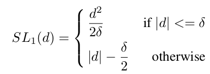
-
其中d指的是学习的偏移量:d=\left(t_{i}-t_{i}^{*}\right)
-
当|d| \leq \delta时,d / \delta可以定量的表示数据结果和真实值之间的距离；
-
当|d| \geq \delta时,损失的梯度均为1，这样我们就无法根据梯度来估计一些example输出贡献度。基于此作者对smooth L1做了修正，得到ASL1：
通过上图可以发现有相当数量的outliers，以及outliers所对用的gradient norm值很大，因此与GHM-C相似的方式，定义GHM-R，达到对outlier的loss达到抑制的目的。:
注意:GHM-R中并没有对easy example做抑制，因为作者认为，在目标框的回归阶段，easy examples同样能够对提升框回归的准确性带来帮助。
效果展示
ATSS(19/12)¶
论文指出one-stage anchor-based和center-based anchor-free检测算法间的差异主要来自于**正负样本的选择**，提出一种能够自动根据GT的相关统计特征**选择合适的anchor box作为正样本**，在不带来额外计算量和参数的情况下，能够大幅提升模型的性能的方法。
anchor base and free正负样本3点差异分析(RetinaNet vs FCOS)
-
数量差异:RetinaNet在特征图上每个点铺设多个anchor，而FCOS在特征图上每个点只铺设一个中心点，这是数量上的差异。
-
正负样本选择不同:RetinaNet基于anchor和GT之间的
IoU和设定的阈值来确定正负样本，而FCOS通过GT中心点和铺设点之间的距离和尺寸来确定正负样本。- 蓝色框:GT，红色框:RetinaNet的anchor，红色点:FCOS铺设的点，数值:0负样本,1正样本。
-
偏置(offeset)预测不同:RetinaNet通过回归矩形框的2个角点偏置进行预测框位置和大小的预测，而FCOS是基于中心点预测四条边和中心点的距离进行预测框位置和大小的预测。
- 蓝色框+蓝色点:GT，红色框:RetinaNet正样本，红色点:FCOS正样本。
做实验，比较3个差异的结果影响大小
-
**差异1排除:**将RetinaNet在每个点铺设的anchor数量减少到1(和FCOS保持一致),AP值仅差
0.8- 由于FCOS论文中用了一些训练的技巧(比如
Group Normalization、GIoU Loss等)，所以为了公平对比2个算法，作者在RetinaNet上也加上了这些技巧。
- 由于FCOS论文中用了一些训练的技巧(比如
-
差异2排除(按行看):
Intersection over Union：表示RetinaNet和FCOS都采用基于IoU方式确定正负样本，二者的mAP基本没有差别。Spatial and Scale Constraint:表示RetinaNet和FCOS都采用基于距离和尺寸方式确定正负样本，二者的mAP也是一样。- 回归方式的不同并不是造成FCOS和RetinaNet效果差异的原因
-
确定差异三是根本:(按列看)
- Box这一列的两个数值表示将RetinaNet的正负样本确定方式从IoU换成和FCOS一样的基于距离和尺寸，那么mAP就从37.0上升到37.8
- Point这一列的两个数值表示将FCOS的正负样本确定方式从基于距离和尺寸换成和RetinaNet一样的基于IoU，那么mAP就从37.8降为36.9。
- 如何确定正负样本才是造成FCOS和RetinaNet效果差异的原因
ATSS确定正负样本
- 小小的缺点:
ATSS的A表示adaptive表示自适应，但是上图中有少量超参数，例如:k- 感觉
IOU的选择有一定的先验知识。